Temple GCSE — studying for exams, turned into a game. (2017)
A gamified quiz app for GCSE students, where every subject is a low-poly temple that grows as you pass tests. Designed at Nolte for iOS and Android.
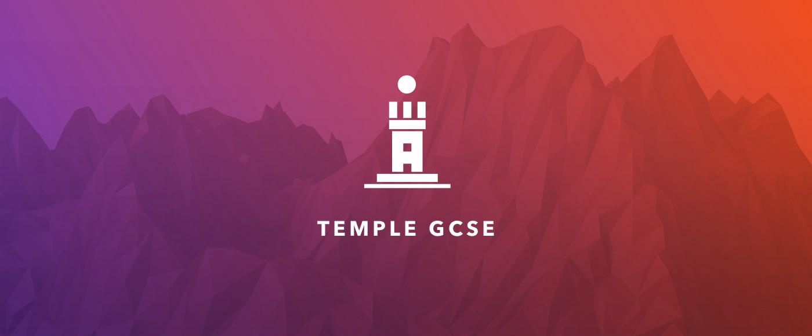
Overview
Temple GCSE is a quiz app where students test their knowledge of chosen subjects. Each subject is a temple placed on a map.
We worked with the Temple GCSE team to create a fun, engaging way to study and pass GCSE exams. In the product strategy session we concluded that gamifying the experience would keep students engaged and set them up for success.
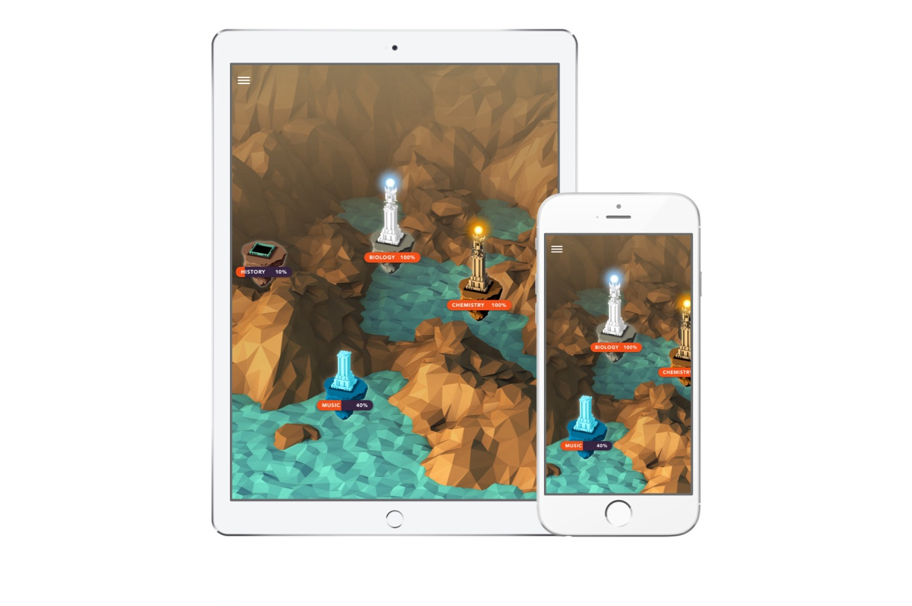
The goal
Nolte and the Temple GCSE team aligned on one product vision: make learning and studying for GCSE exams fun and easy to access, while helping students pass.
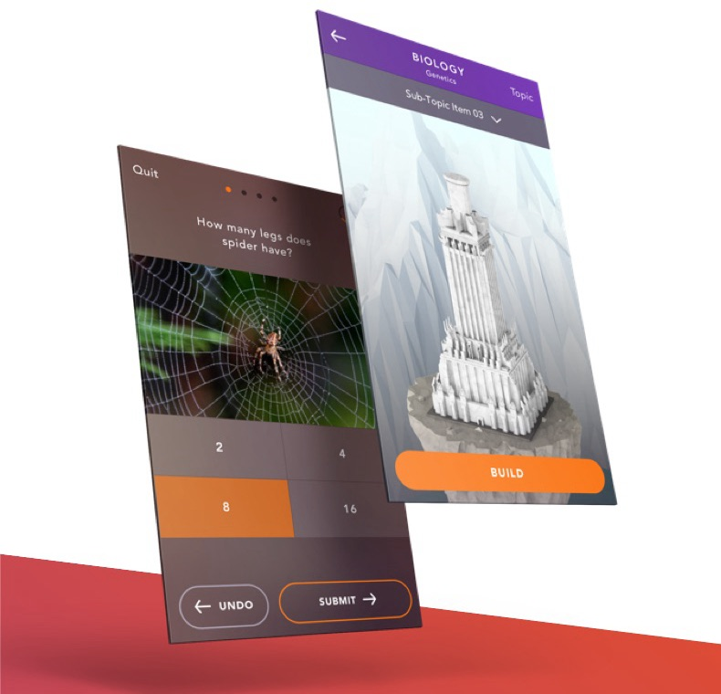
User experience
We needed a student-facing app as well as an admin panel where tutors add subjects, questions and answers. User experience and high-quality design would be critical to keeping students engaged.
To get the experience right for students, we worked through several rounds of wireframes and clickable prototypes.
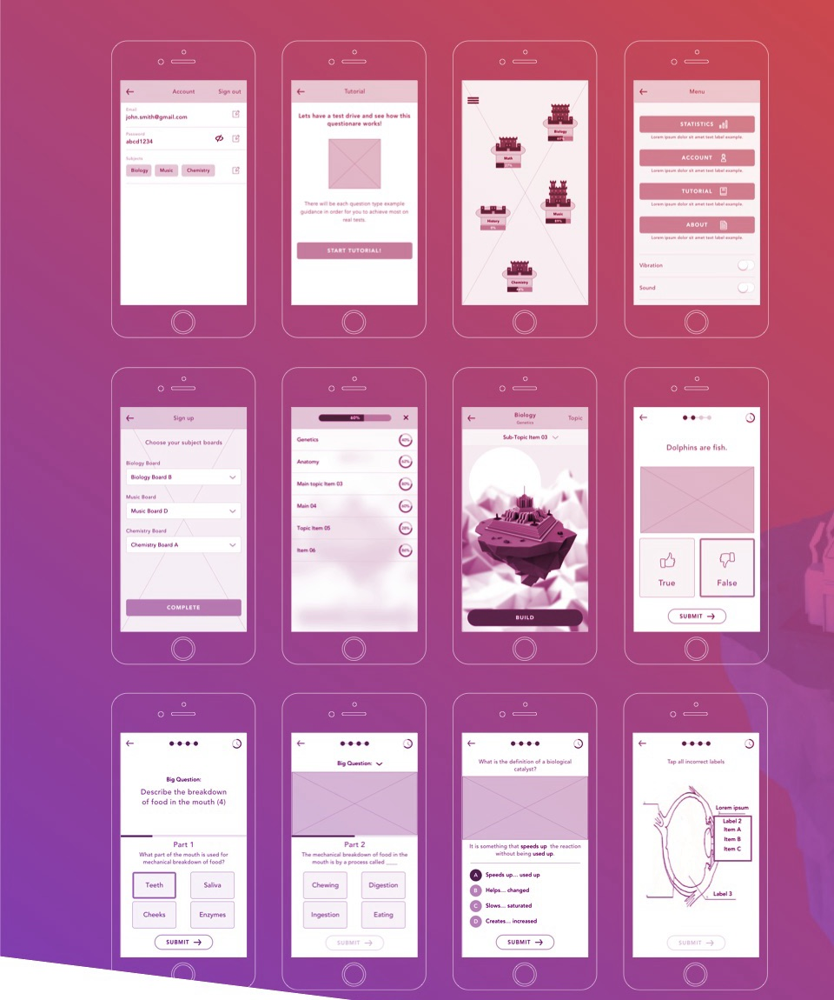
Colours
The brief, and the inspiration for the palette, was a sunset: bright and dark tones, with orange and purple as primary colours.
Using the photo as a reference, the palette pairs dark indigo tones with red, orange and yellow as bright, warm colours.
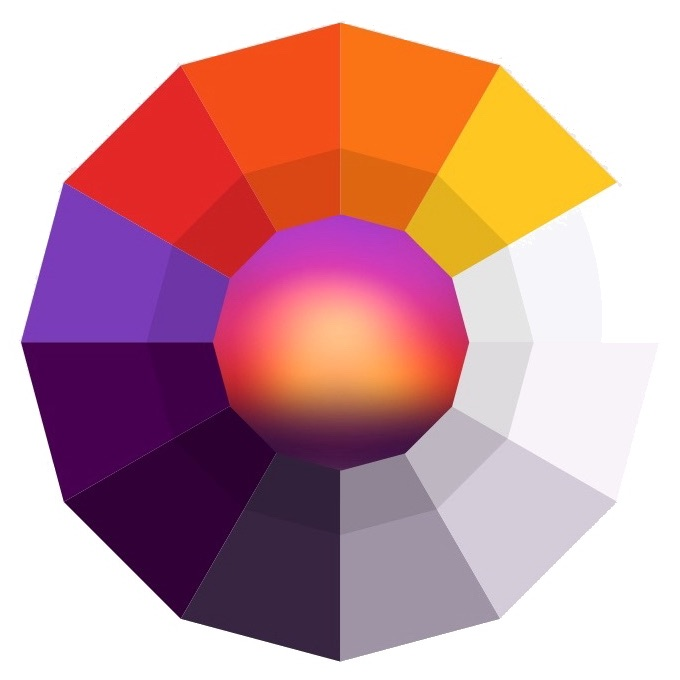
Low-poly models
The low-poly models, with their shading and detail, were built in Cinema 4D and finished in After Effects.
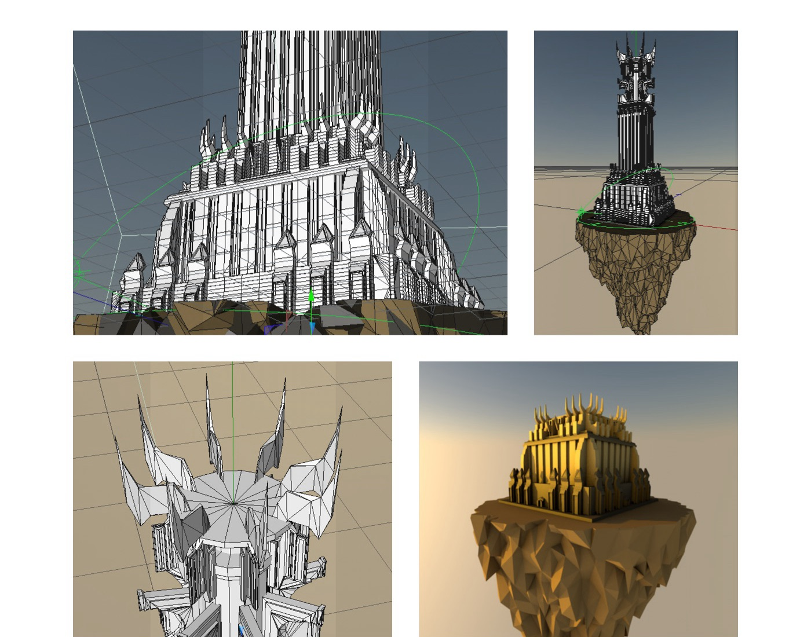
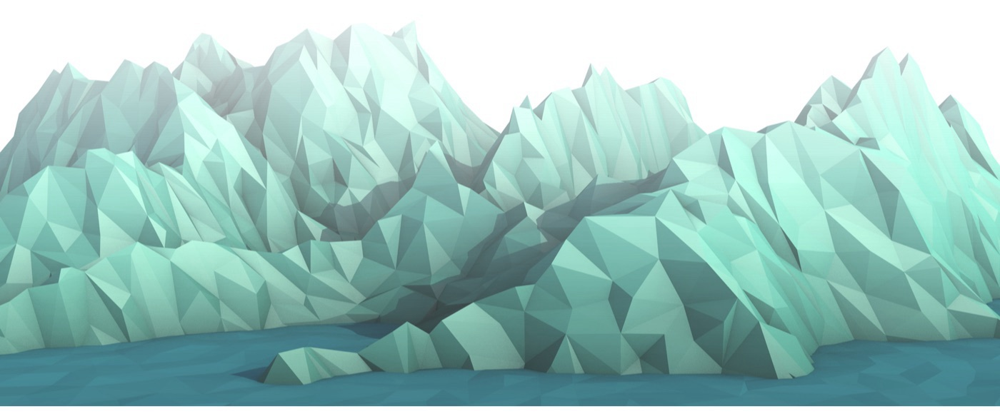
User interface design
The direction was a clean, playful style focused on engaging graphics and actions. We built a fully custom UI kit with every element of the app, following proven UI and UX methods such as Material Design.
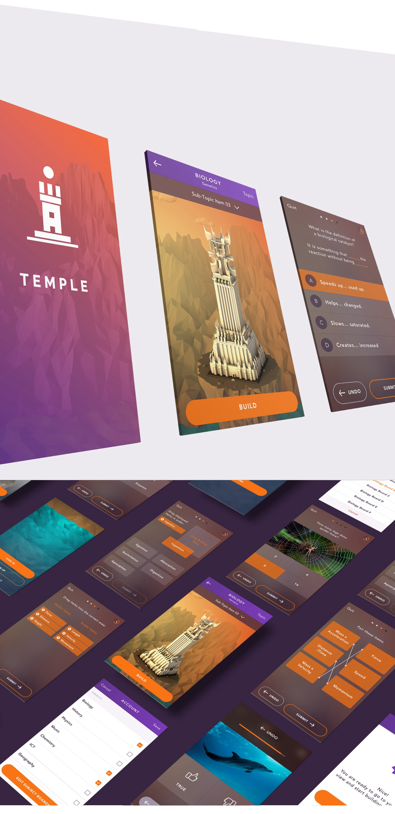
Interaction
Animated elements improve the experience and make tests more interesting as students cycle through each subject.
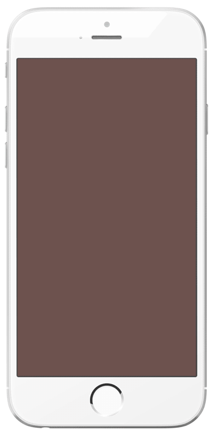
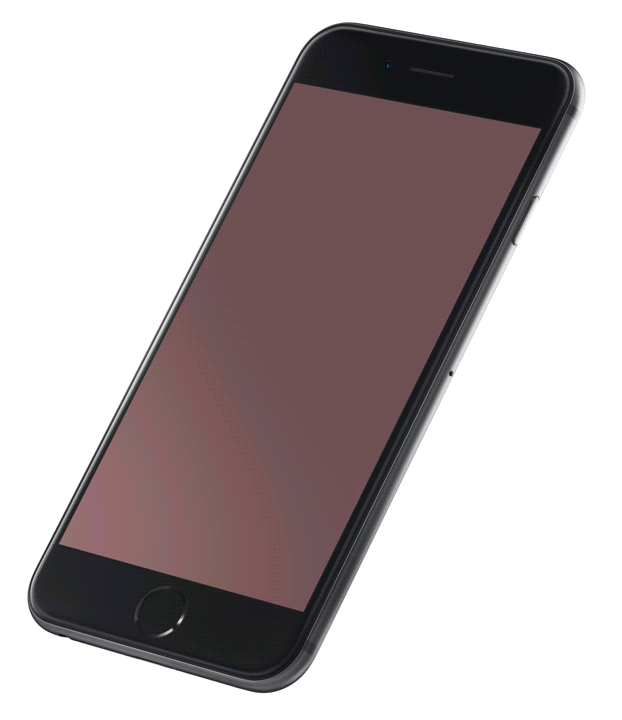
Compositing
Each temple on the map stands for a different subject and has its own ambience and textures. Below, each temple in its large view.
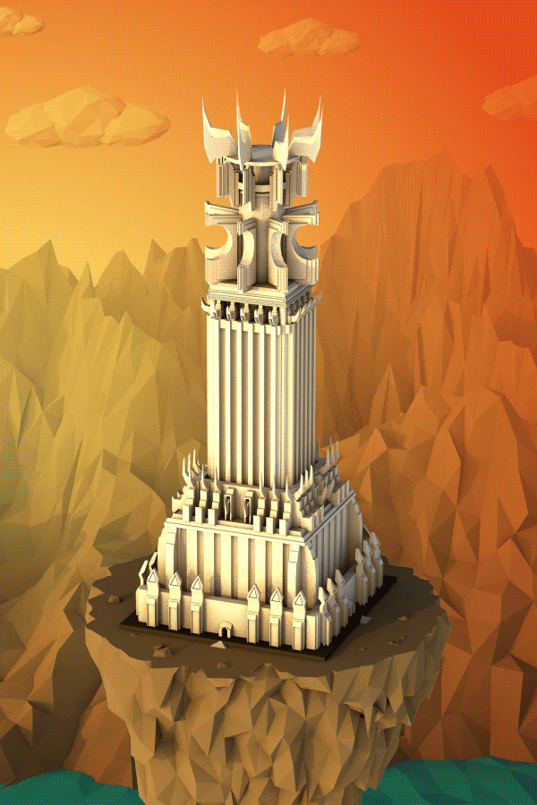
Map view
Small, low-detail temples keep the map clear. Each one reflects how its temple looks in large view, and levels up as students pass tests.
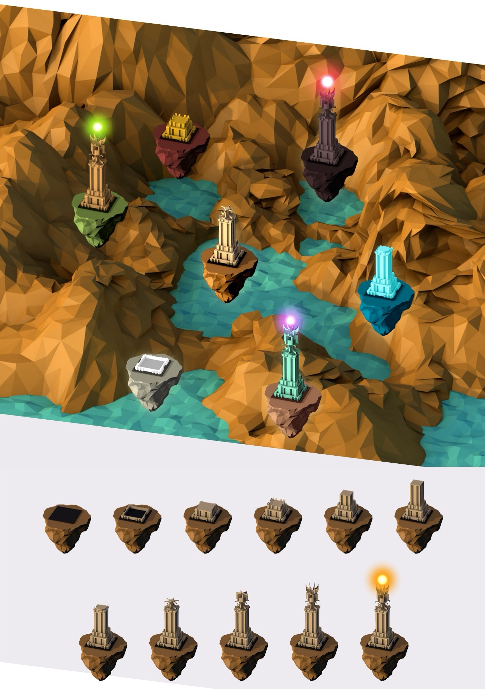
Effects
When a student passes every test in a subject, energy appears on top of the temple to show 100% completion — and every temple has its own effect.
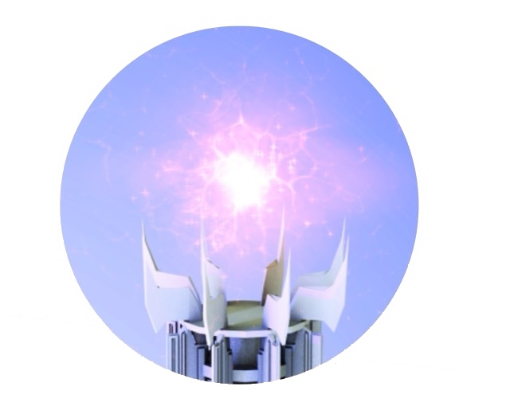
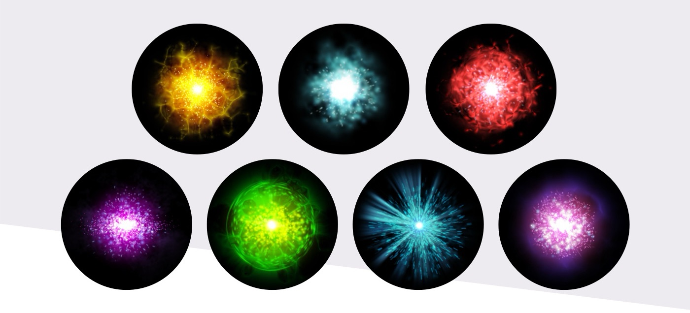
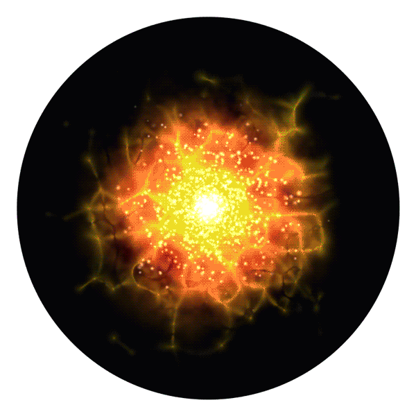
Combining it all
A timelapse of a temple levelling up as the subject is completed, until its torch lights.
The result
We worked with Temple GCSE to define key performance indicators for engagement and conversion. Several measurement tools were built into the app, and we work with the client to consult on, measure and report the metrics that drive future product updates.
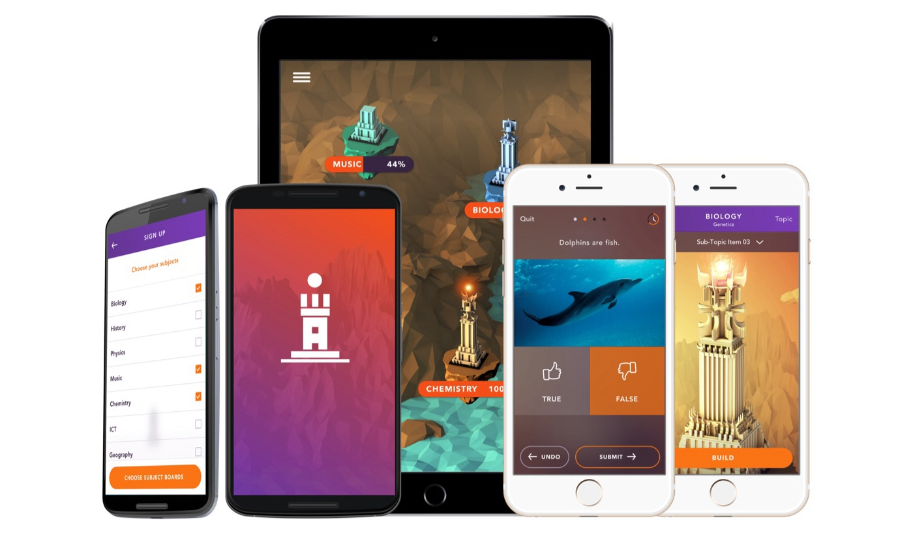